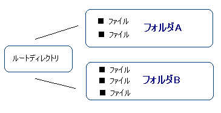
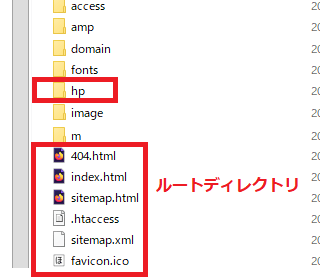
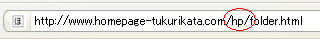

フォルダ分けによる階層化
ホームページを作成する際、「カテゴリー」や「ファイルの種類」に応じてフォルダ分けをしながら作成していくことをおすすめします。
- カテゴリによるフォルダ分け → 「カテゴリ名」
- 画像専門フォルダ → 「image」や「img」など
- 携帯サイト用フォルダ → 「m」や「i」など
- CSS用のフォルダ → 「css」など
例えば、料理のレシピサイトなら「中華」や「イタリアン」、「和食」などコンテンツの種類に応じてカテゴリ分けをし、それぞれ「chinese」や「italian」、「japanese」などとフォルダ名でグループ化していきます。
あるいは、jpgやpng、gifなどの画像ファイルについては画像専用のフォルダを作成し、「image」や「picture」、あるいは「img」などのフォルダ名で作成するのが一般的です。
そのほか、ガラケー用の携帯サイトも作成している場合は「m」や「i」などの専用フォルダを作成してモバイル用ファイルをまとめておきます。CSSについても、分割してファイル数が多い場合には「css」などのフォルダ名でまとめておくとよいでしょう。
ルートディレクトリとは？
一番上の階層はルートディレクトリと呼ばれており、その下にフォルダを作成することにより、ホームページが階層化していきます。

このフォルダ分けをした階層は、ルートディレクトリに対して「サブディレクトリ」、あるいは「サブフォルダ」などともよばれています。
一般的に、ルートディレクトリにはトップページの index.htmlファイルやスタイルシート、robots.txtや.htaccess、sitemap.xmlなど重要なファイルを置く場所となっています。一方、個別のページはその下にフォルダを作って作成していくケースが多いです。
けれども、下の階層に行くに従い、検索エンジンではヒットしにくくなる傾向があるため、ページ数の少ないホームページの場合は無理にフォルダ分けをせず、すべてルートディレクトリに直接設置しておくことをおすすめします。
フォルダ名とサイトURLの関係
作成したフォルダとURLの関係ですが、当ホームページを例に見てみますと、このページは「hp」のフォルダのなかに「folder.html」のファイルを作成しています。

このファイルは、実際のサイトのURLでは以下のように表示されます。

「ホームページのＵＲＬ/フォルダ名/ファイル名」という順序です。
この「hp」のフォルダにはホームページの作り方に関するページを入れており、アクセスアップに関するページは「access」のフォルダ、ドメインに関するページは「domain」のフォルダのなかに入れています。
そのほか、「image」には画像ファイル、「fonts」にはフォントファイル、「amp」にはampページを入れています。フォルダ名には「.html」などの拡張子は必要なく、任意の小文字英数字で指定できますが、画像フォルダなら「image」などのように、意味のあるファイル名で作成するようにしましょう。
具体的なファイル名の付け方につきましては、こちらのページをご参照ください。
→ 個別ページのファイル名の付け方
階層が「浅い」と「深い」の違い
ホームページの階層が浅い、深いといった表現のされることがありますが、通常はルートディレクトリが一番浅い階層にあたり、それ以降、フォルダ分けがされるごとに深い階層になっていきます。
けれども、検索エンジン対策（SEO対策）の意味で使われる場合、トップページからのクリック数で階層の浅い深いを判断されることもあります。トップページからワンクリックで移動できるページは浅い階層のページ、数クリックしないとたどり着けないようなページは深い階層のページという意味で使われることもあります。
一般的に、ルートディレクトリに近い階層の方が内部リンク数が多くなる傾向がありますし、また、重要性の高いページと認識される傾向があるため、検索エンジンでヒットしてほしい重要なページについては浅い階層へ設置しておくことをおすすめします。
フォルダ分けはした方がよいですが、かといって、フォルダをたくさん作っておいて中は空だったという場合には検索エンジン対策上はあまりよくありません。
意味のないフォルダ分けは避け、それぞれのフォルダである程度のボリューム感が出るようにしておくとよいでしょう。